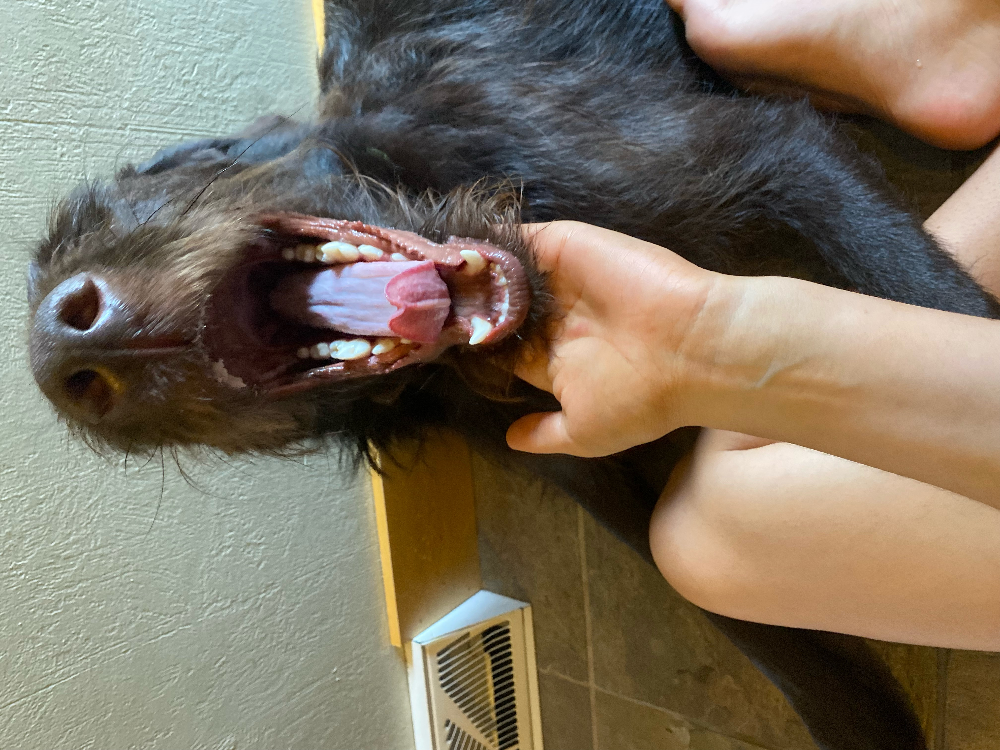
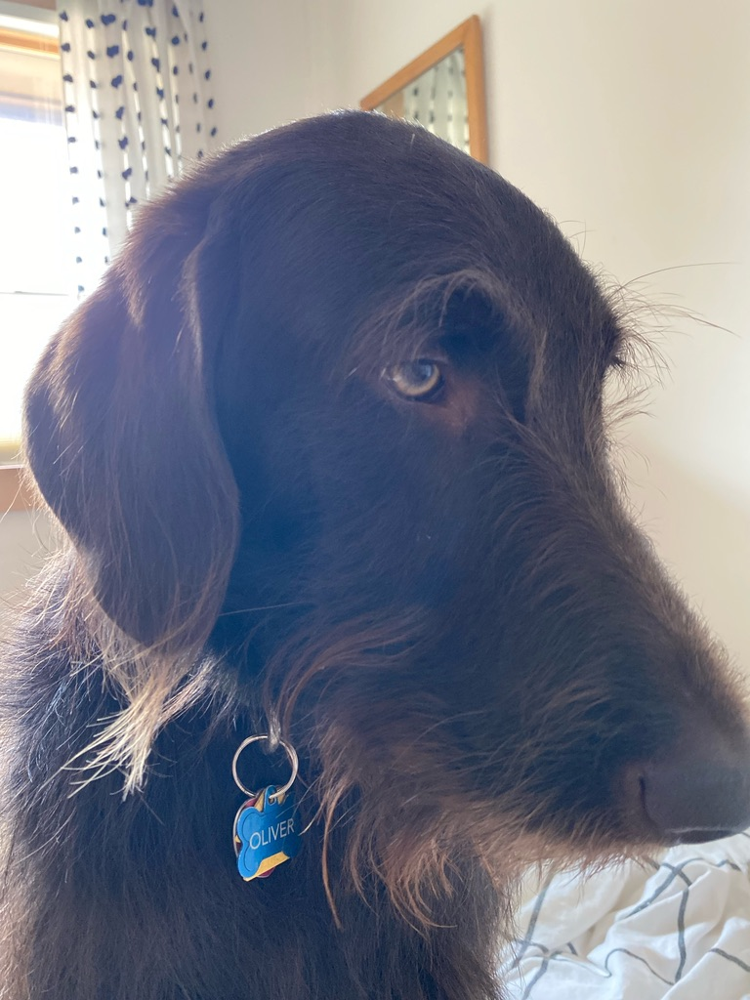
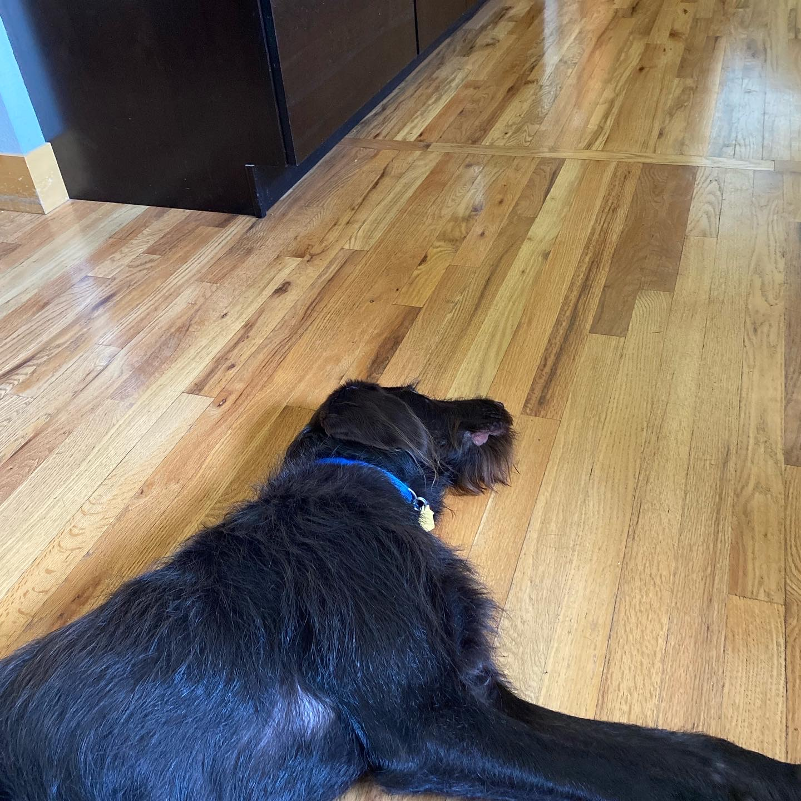

My dog, Oliver, is the main thing in life I know well. He possess many features that make him better than any other dog.
He was born in September of 2020, to a silver lab mother and black poodle father. He had eight other siblings who all look shockingly unrelated, besides the way they great people, by putting their entire mouth around your wrist!
He holds many nicknames, a few being: Ollie, Moose, Smoochie, and Bestie Dog!

Every morning Oliver wakes up and immeidatly is starved. He gets fed at 7:00 AM and promptly after decides he wants to play fecth all day.
Fun Fact: Many labradoodles who are the first born in their litter, take on one parents genes more strongly.

If for some reason you are not up and extremely excited about playing fetch, Oliver will jump up on your bed and stare at you, puppy dog eyes and all, until you give in.
Fun Fact: Oliver has been able to grow a wonderful beard that needs grooming once and a while. Most labradoodles have various coats, but they normally don't need to be groomed regularly.
Once fetch seems less than exciting, Ollie needs a walk. He normally takes an extremely leisurely time, smelling every single plant he can.
Fun Fact: Labradoodles have great directional skills. Oliver could walk to the other side of Boulder and be able to guide us home no problem.
After a nice day in the sun, Ollie is in need of some serious cool down time. He often plays in the mini pool outside or runs to catch the water from the hose. Oliver could quite literally do this for hours on end.
Fun Fact: Many labradoodles like to swim but need slight training. In Olivers case, he enjoys standing in the pool, but he will never sit down or lay. We have yet to figure out why!

Once the clock strikes 7 PM, it is time for dinner. My family found a dog food brand conveniently called "Ollie", to which we feed Oliver this food every night.
After eating, Ollie is wiped out. He spends his evenings laying on the cold wood floor and waiting for somebody to get into bed so he can follow.
Fun Fact: Thankfully Oliver is a hypoallergenic labradoodle, otherwise my entire family would deep dive into a puddle of allergies.
Oliver is one of the only things I know and continue to want to know more things about. Thankfully I have plenty of time to learn so much more!
If you want to learn more about labradoodles, click this link!